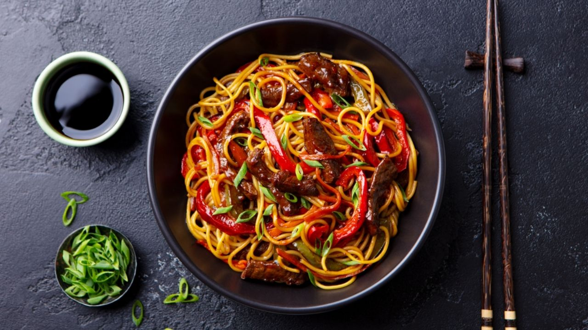

font-family: 'Inter', sans-serif;
font-family: 'Kanit', sans-serif;
font-family: 'Merriweather', serif;
/* ==================== *\
O F E R T A
\* ==================== */
Título de la Pestaña

TALLARÍN SALTADO CHIFA
Seguro que alguna vez has sentido un hambre feroz y no has querido esperar mucho para cocinar o comprar algo. Es en esos momentos cuando un rico Tallarín saltado al estilo chifa siempre te salvará. Y si alguna vez te has preguntado cómo se prepara esta delicia, pues aquí abajo dejamos nuestra receta. ¡Vamos a cocinar!
Ingredientes
- 2 cucharaditas de azúcar blanca
- 1 cucharadita de sazonador ajinomoto
- aceite de ajonjolí sésamo
- aceite vegetal
- 5 cucharaditas de sillao salsa de soja
- 2 cucharaditas de salsa de ostíon
- 150 gramos de Kolantao (Holantao) vainita china de tamaño grande y verde
- 200 gramos de brócoli
- 1 vaso de caldo de pollo
- 3 ramas de cebolla china picada sólo la parte verde. Los tallos lo reservamos, no lo tiramos
- 1 cucharadita de chuño
- 1 pimiento rojo cortado en tiras finas
- 1 col china cortada en caudritos medianos
- 1/2 kilo de pechuga de pollo cortado en cuadros o si lo prefieres la misma cantidad de carne de res de preferencia lomo
- 250 gramos de frijol chino
- 1 kilo de tallarín chino
- Ají al gusto
- Sal, pimienta y limón (lima verde) al gusto
Instrucciones para hacer Tallarín saltado chifa
- Primero agregar en una olla dos litros de agua. Cuando el agua esté hirviendo, apágalo y coloca los tallarines chinos por 1 minuto y medio, luego retíralos y pásalos por agua fría y resérvalos.
- A continuación calienta un poco de aceite en un wok o en su defecto una sartén grande y fríe los tallarines y cuando estén listos resérvalos.
- Ahora en la misma sartén echa un poco más de aceite si es necesario, espera a que caliente y echa el ajo molido con los trozos de pechuga de pollo, agrega un poco de sal y dóralos por algunos minutos.
- Agrega el pimiento cortado en tiras, el kolantao, el frijol chino, el brócoli, la col china y mueve todo para que se mezcle bien. Fríe todo bien y moviendo para que no se queme por alrededor de 5 minutos (dependiendo del fuego).
- Agrega el caldo de pollo, la salsa de ostíon, el sazonador, el azúcar, el sillao, mezcla todo y un poco de sal para corregir. Prueba y echa más de lo que a tu gusto sea necesario.
- Disuelve el chuño en caldo de pollo y agrégalo a la carne con las verduras, mezcla todo bien y dejamos que cocine todo un par de minutos.
- Finalmente agrega la cebolla china cortada, una cucharadita de aceite ajonjolí y unas gotas de limón.
- Mezcla todo y coloca en un plato una ración de tallarín y agrega encima la salsa con el pollo.